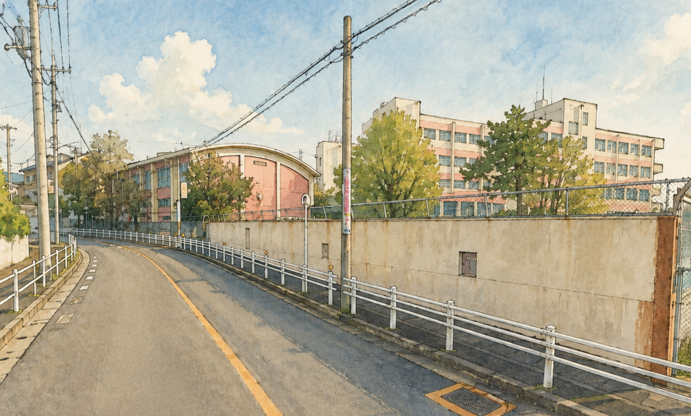

陽明学区 デジタル回覧板 令和8年5月号（第2号）

若葉がまぶしい季節となりました。今月は、私たちの街で開催されるアジア競技大会のファミリー無料招待の特報や、毎回大人気のハンカチ作り体験など、見逃せない情報が届いています。
また、自転車の新しいルールや、身近な安全を守る大切なお知らせも合わせてチェックしておきましょう！
🔥 【5/31締切！】今すぐ応募したい2大特報
🏅 アジア競技大会・アジアパラ
ファミリー無料ご招待！
【応募締切：5月31日まで】
2026年開催の大舞台をお子様と一緒に観戦するチャンス！愛知県内の子どもたち（2008年4月2日以降生まれ）とそのご家族（1組4名まで）を抽選で無料招待します。
招待の案内・応募サイトを開く 🔗
🧣 【体験】伝統工芸にふれる
有松絞ハンカチ作り体験セミナー
【申込締切：5月31日まで / 先着50名・無料】
日時：6月21日(日) 10:00〜12:00
場所：陽明小学校 体育館
伝統の技を楽しく学びながら、自分だけのオリジナルハンカチを作ってみませんか？ご家族での思い出作りに最適です。
ハンカチ作りをWebで申し込む 📝🚧 周辺住民の皆様へ 重要なお知らせ
6月6日(土) 瑞穂公園周辺
大規模な輸送演習に伴う渋滞予報
アジア・アジアパラ競技大会に向け、13:00〜19:00の間、周辺道路でバス30〜40台の集中運行や交通制限が行われます。
幕にわが街の「田辺通4」「田辺通5」交差点周辺が関係者輸送経路となり、【13:30〜16:15】および【17:30〜18:15】は激しい混雑が予想されます。
※規制エリアの地図・う回路については、ページ下部の「回覧板原本(PDF)」5ページをご確認ください。
👮 子育て＆暮らしの安全・安心
🚲 自転車の「青切符制度」スタート＆便乗詐欺に注意！
4月から始まった自転車の反則金（青切符）制度。この制度に関して疑問や不安がある方は、以下の窓口から直接質問をお寄せいただけます。
制度についての疑問・質問受付はこちら 📥トワイライトスクールだより 5月号
5月の一人帰り時間：17:00まで（お迎えなしの場合）
6月分の講座申込期間：5月26日(火)〜5月29日(金)
※詳しい講座カレンダーや持ち物は、ページ下部の「回覧板原本(PDF)」裏面を必ずご確認ください。
🎨 文化・交流・暮らしの知恵
🥩 サンライトサロン納涼食事会
日時：7月2日(木) 12:00〜14:00 ＠木曽路八事店
美味しい食事を囲んで楽しく交流しましょう。食事代3,000円。申込締切は6月25日まで。
🖼️ 新聞ちぎり絵サロン
日時：7月3日(金) 13:30〜15:30 ＠リハセン
指先を使って芸術的なちぎり絵に挑戦！参加無料、先着20名様。受付は6月1日から開始です。
📸 瑞穂区役所での展示会情報（写真展・美術家展）
▼
- 瑞穂のさくら写真展：5/21(木)〜5/24(日) 10:00〜16:00 (最終日は15:00まで) ＠区役所講堂。街の美しい桜の記憶が並びます。
- 第59回 美術家展：6/18(木)〜6/22(月) 9:30〜17:00 (最終日は14:00まで) ＠区役所講堂。地域の芸術作品が一堂に集う伝統の展示会です。
📱 ごみ分別アプリ＆蚊の発生防止
▼
● 分別アプリを入れてみませんか？
迷いがちなごみの分別が一発でわかります！各スマホのアプリストアで「さんあ〜る」と検索して無料ダウンロードしてください。
● 初夏のボウフラ（蚊の幼虫）発生を防ごう！
植木鉢の受け皿、古タイヤ、雨ざらしのバケツなど、わずかな「たまり水」が蚊の発生源になります。週に一度は水をひっくり返してリセットしましょう！
🤝 陽明学区での暮らしを、もっと安心に
マンションや賃貸にお住まいの方、以前から住んでいるけれど未加入の方も大歓迎です。
街の安全や子どもたちの笑顔を支える「共助の輪」に、あなたも加わりませんか？